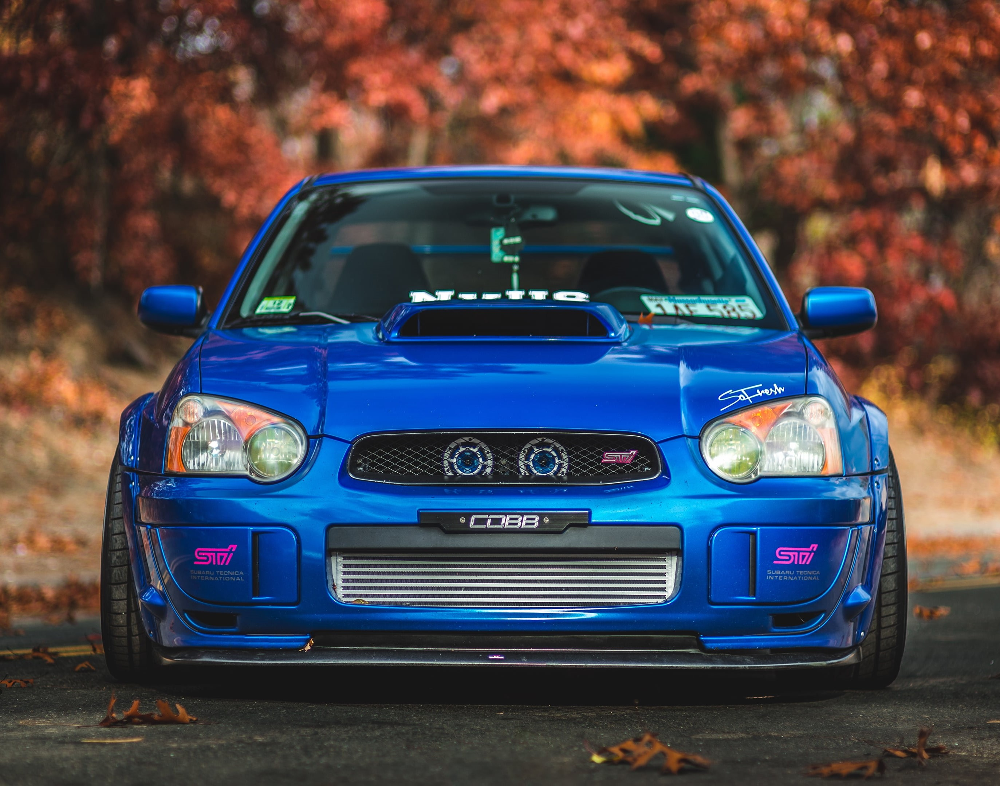
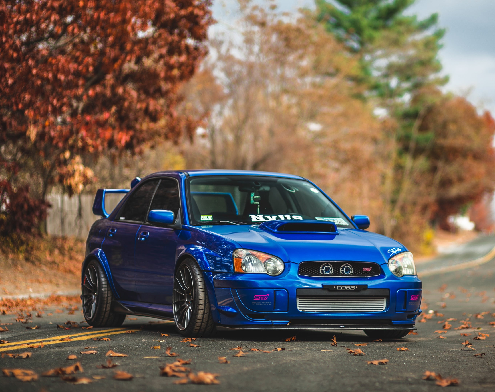
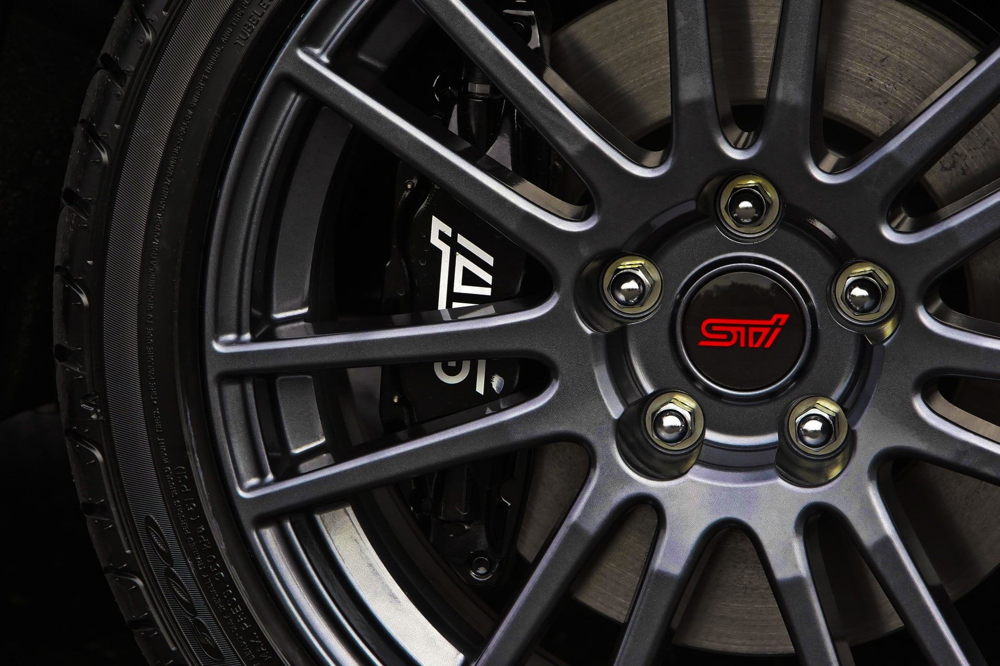
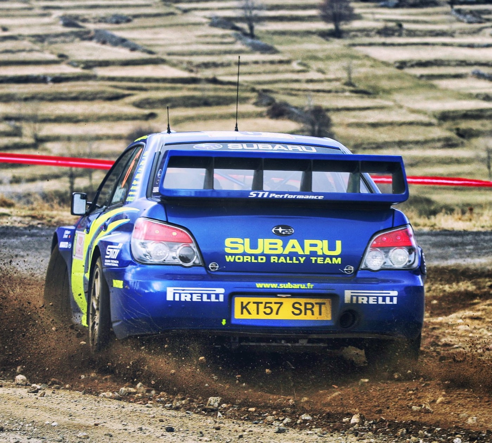
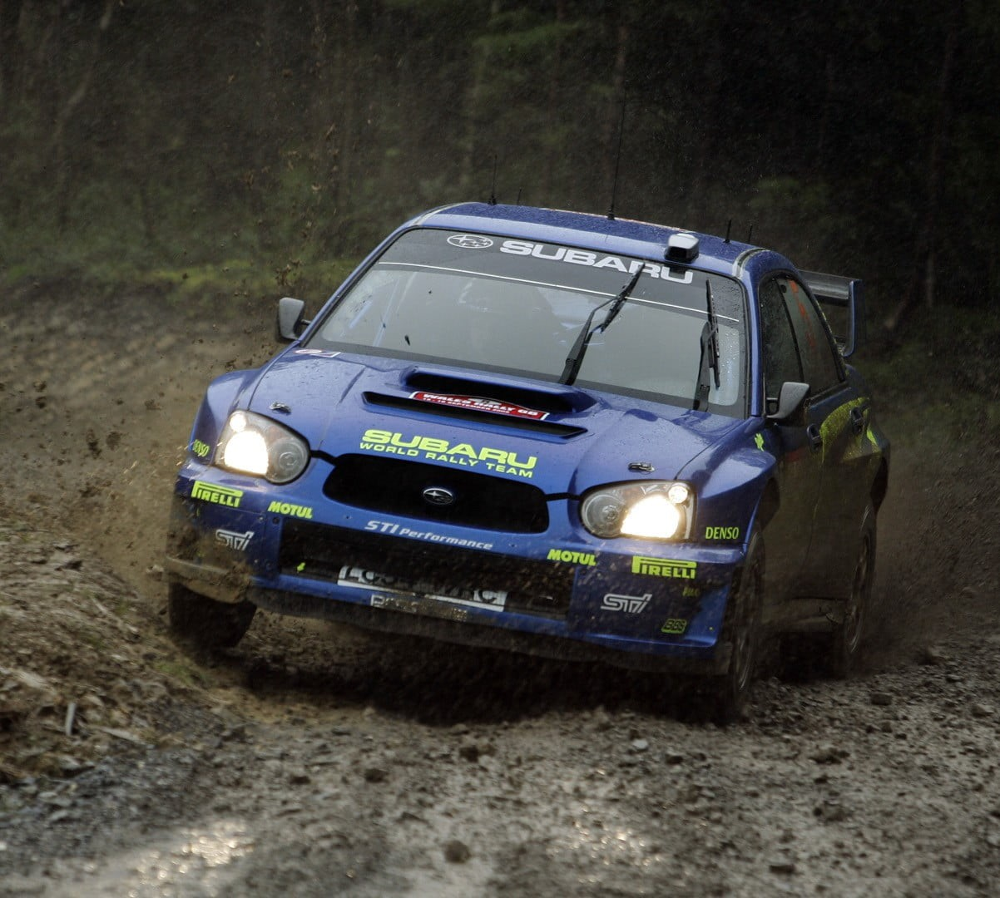
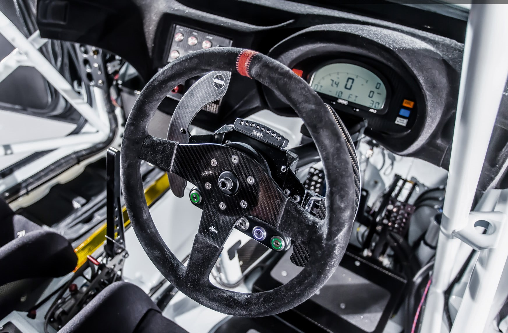

Glory to Subaru
Subaru cars are known for their use of a boxer engine layout in
most vehicles above 1,500 cc. The lone exception is the BRZ,
introduced in 2012 via a partnership with Toyota, which pairs
the boxer engine with rear-wheel-drive. Subaru also offers
turbocharged versions of their passenger cars, such as the WRX,
Legacy and Outback XT, Ascent, and formerly the Legacy GT and
Forester XT. Subaru goes off-road with ease and performs well as
a sports car

Subaru is everyone's dream
Subaru is the automobile manufacturing division of Japanese
transportation conglomerate Subaru Corporation (formerly known
as Fuji Heavy Industries), the twenty -first largest automaker
by production worldwide in 2017.


